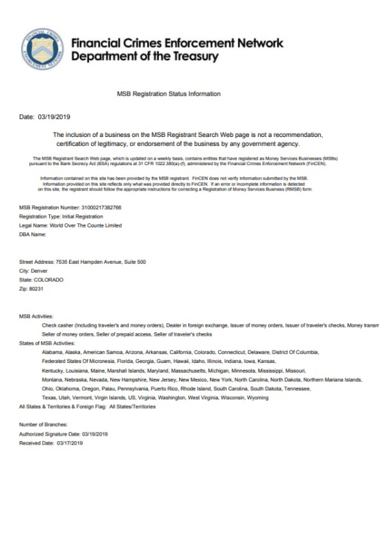
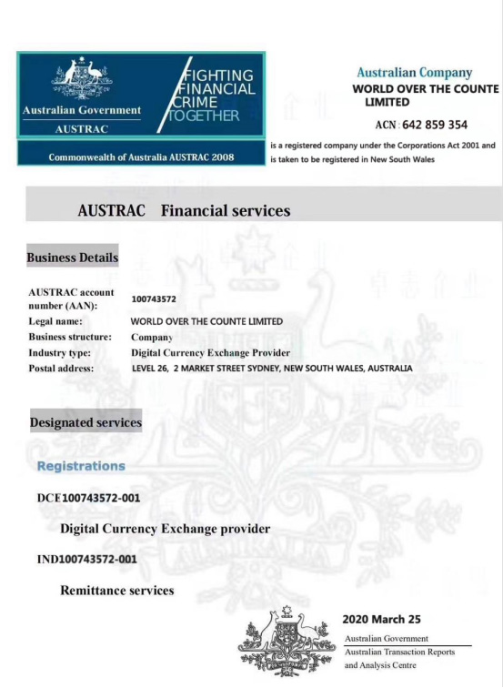
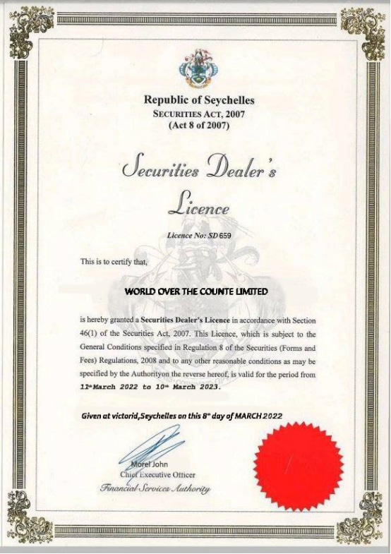
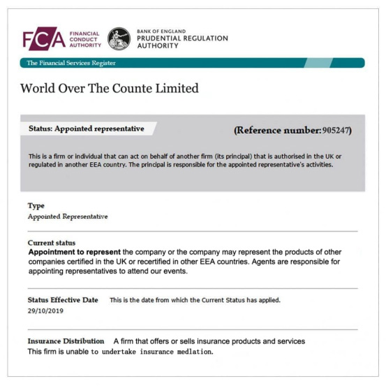
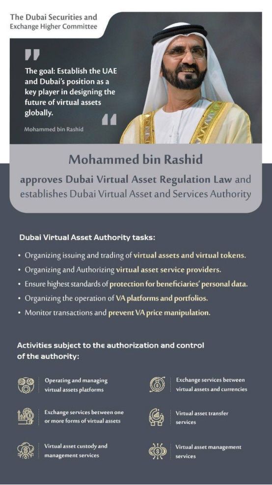

Certifications
Certifications
Certifications
Certifications
The US MSB license is a type of financial license supervised and issued by the US Treasury Department. The main objects of supervision are money service-related businesses and companies, including digital currency, virtual currency transactions, ICO issuance, as well as foreign exchange, international remittances etc. business.
The full name of FINTRAC MSB in Canada is the Financial Transactions and Reports Analysis Centre of Canada. The Canadian Financial Transactions and Reports Analysis Centre is Canada's financial intelligence unit, established in 2000. It is an independent body reporting to the Minister of Finance and responsible to the Centre for Parliamentary Activities.
AUSTRAC is Australia's financial regulator responsible for preventing and detecting money laundering and terrorist financing. The Commonwealth Government is increasing the compliance of reporting entities with the AML/CTF Act and rules by expanding the powers and functions of the UM Group CEO.
Following the entry into force of the AML/CTF amendments, AUSTRAC has the following powers：
1、UM CEOs can issue notices for wider breaches, including non-compliance with know-your-customer (KYC) reporting and record-keeping procedures
2、The AUSTRAC chief executive is able to issue updated policy directions to licence holders to retroactively breach their obligations. 3. Give police and customs officers the power to search and seize the principals of licence-holding companies in breach of their obligations at the Australian border.
Among the many sections of the Gibraltar Financial Services Act, the amendments mainly include additional regulations for "customers" and "prospective customers", and additional regulations for "investors" and "prospective investors". Analysts therefore deduce that the intent is to continue existing regulations aimed at protecting accredited investors as well as retail investors involved in Gibraltar’s distributed ledger technology (DLT) industry.
Following the entry into force of the AML/CTF amendments, AUSTRAC has the following powers：
The UK Financial Conduct Authority (FCA) was established on April 1, 2013, formerly known as the UK Financial Services Authority (FSA), established in 1997. The UK FCA is responsible for regulating banking, insurance and investment businesses, including securities and futures. The UK Financial Services Authority (FSA) and the Bank of England (BOE) are under the Ministry of Finance. The FSA is responsible for the management of financial undertakings, while the main task of the BOE is to maintain financial stability.
Dubai VARA (Dubai Virtual Assets Regulatory Authority) is a law under Law No. 4 of 2022 on the regulation of virtual assets in the Emirate of Dubai to create an advanced legal framework to protect investors and to design a well-recognized virtual asset (VA) industry International standards are governed by prudential supervision to promote responsible business growth. The law applies to the entire emirate, including Special Development Zones and Free Zones.
At present, World Over The Counte Limited is applying to join Dubai VARA with the senior staff of the relevant departments of Dubai VARA (Dubai Virtual Assets Regulatory Authorit), and we will update and release after the application is completed.
